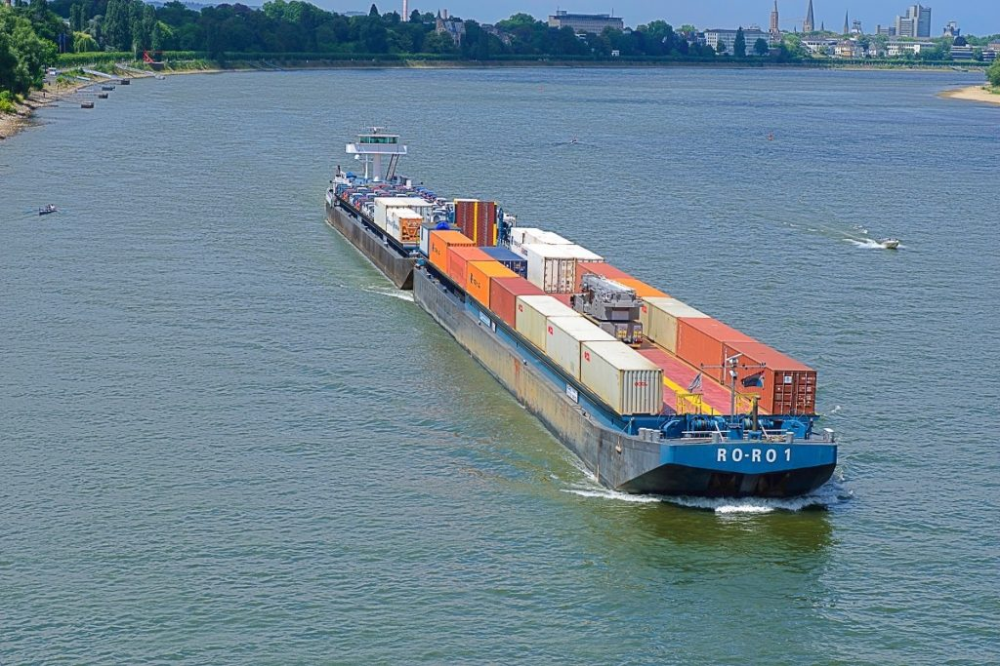

Transporte fluvial
El transporte fluvial es un modo de transporte, cuyo objetivo persigue el traslado de productos o pasajeros de unos lugares a otros. El mismo es practicado en ríos y canales fluviales que cuentan con una profundidad adecuada para la ejecución. El transporte fluvial es una importante vía de comercio entre otros interior, por lo que, en ríos con las infraestructuras suficientes son muy importantes.
